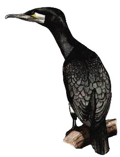

Cormorant
A common bird at the reservoir that can be seen throughout the year. Numbers steadily increased to peak in 2000.

No records between 1924 & 1951
25/10/52 - Single bird. 1st record (DEP)
16/01/65 - Juvenile bird. Seen again on 23/01
27/12/60 - 2 birds. Single birds were reported throughout the year
1961 - Single birds noted between January & March. Often shot by game keepers
1962 - Single birds recorded
1963 - Single birds recorded
16/04/64 - 2 birds
12/03/70 - Maximum of 6 birds
10/01/71 - 4 birds. Again on 14/01
25/01/71 - 2 birds
13/04/71 - 2 birds
09/12/71 - 2 birds
28/09/74 - Dead bird found. Had been 'ringed' at St. Margarets Island, Tenby on 28/07/74
1984 - Maximum count of 10 birds
23/05/87 - 2 birds
20/12/91 - Maximum count of 15 birds. Up to 5 birds have been normal
28/03/92 - 10 birds
13/09/92 - 8 birds
10/01/93 - 14 birds
09/07/93 - 15 birds
18/12/93 - 17 birds
27/12/94 - Maximum count of 18 birds
21/03/95 - 20 birds, including 2 of the 'continental' type, sporting a whitish head
24/08/95 - Maximum count of 24 birds
26/02/96 - 30 birds
13/03/96 - 38 birds
25/12/96 - 40 birds
23/01/97 - Maximum count of 30 birds
11/12/98 - Maximum count of 38 birds
27/01/99 - 43 birds. Highest count to date
30/01/00 - 49 birds a new highest count
07/12/01 - 32 birds
17/01/02 - 33 birds
26/12/03 - 28 birds
01/01/04 - 31 birds
25/02/05 - 20 birds
12/11/06 - 23 birds
07/02/07 - 18 birds
03/12/07 - 18 birds
13/11/08 - 26 birds
22/12/09 - 43+ peak of good numbers through December cold weather
10/02/10 - 33 birds
2011 - The previous record of 49 was beaten on 9 dates in December 2011 with max 56 on 11/12/11
2012 - 44 on 02/01 and 19/01 with a more normal max of 30 in December
2013 - 42 on 06/12
2014 - 22 on 20/11
2015 - 26 on 18/02
2016 - 37 on 15/11. 2 colour ringed birds were present in November. One had come from Holland (red ring marked BR) and one from Cornwall (orange ring TB6). The Cornish bird was seen into December
2017 - 45 on 05/12. The 2 colour ringed birds from last year were seen again. The Dutch one (red ring BR) just on 16/10, but the Cornish one (orange ring TB6) was seen throughout January and February
2018 - 27 on 08/02. Otherwise mostly 1-20 throughout the year
2019 - 34 on 21/11. 33 on 04/12, otherwise mostly 1-20 throughout the year
2020 - Max 29 on 08/01, otherwise 1-26 seen daily
2021 - Max 32 on 22/12. Otherwise seen daily often in single figures but with up to 28 in January and December
2022 - Max 38 on 15/12. Otherwise seen daily often in single figures, but over 30 in February and December. Two birds with Orange/Red rings were seen. Ring numbers 097 and 111, both ringed this year in Cheshire.
2023 - Max 54 on 21/11. Otherwise seen daily often in single figures, but over 30 in January and February. Red ringed 111 was seen again in January, February, March, September and December
2024 - Max 21 on 25/12 and 26/12, otherwise daily in smaller numbers. The red ringed bird number 111 was seen again during the first 3 months then disappeared. It was recorded back in Merseyside during the summer where it was ringed and was spotted later at Chew Valley Lake in August. It returned to Chard on 06/12 and stayed to the end of the year and beyond.
2025 - Max 26 on 02/12, otherwise daily in smaller numbers. The red ringed bird number 111 was seen again through January and February, but not again until 26/09. Seen once in November and several times in December